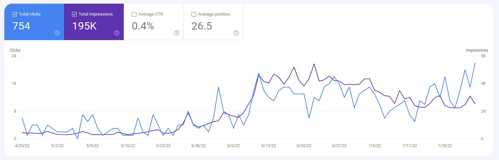

How to get rid of our daily jobs by owning the automation out there.
What is where2buy.it
Where2buy.it is a website that uses natural language processing techniques to extract meaningful information from
reviews on Amazon and then writes articles about specific products based on this information to help consumers make
informed purchasing decisions.
The website was originally focused on restaurant reviews but pivoted to product reviews due to a lack of a solid
business model. The website's software scans through reviews, looking for keywords and patterns that indicate what users
like and dislike about a particular product and generates a summary of the review highlighting the most important
points. Currently, the website only writes articles in English, but plans to expand to other languages in the future.
It aims to help users make informed purchasing decisions while reducing the time and effort they spend researching
products. It utilizes advanced Natural Language Processing techniques to extract valuable information from user reviews
on Amazon, which is then presented in the form of detailed product reviews. The website's philosophy is to work smarter,
not harder, and it does so by automating the research process, allowing users to spend less time researching products
and more time enjoying the things they love. It is an example of how technology can be used to make our lives easier.
I replied to all my Tweets in my timeline using ChatGPT.
By writing a connector between ChatGPT and Twitter, I was able to reply to every tweet in my timeline with only
bot responses. With the help of the Selenium web driver, I was able to control a web browser and interact
with ChatGPT without using any API.
Interestingly, the bot replied in different languages and often created valuable content in the conversation. Like
the following one:
RT @ThePrimeagen: I agree that serverless
architecture can make it difficult to switch providers. It's important to carefully consider the terms and
potential lock-in before committing to a specific provider. It's also worth looking into ways to mitigate
potential lock-in, such a
This caught the attention of some major accounts, which retweeted my tweets and spread them to a much bigger
audience:
However, there were some drawbacks. My online community was able to spot that the replies were not written by a
human:
@rrmdp I'm sorry to hear that you're feeling
frustrated. Sometimes it can be difficult to stay engaged and motivated, especially when things don't seem to be
going as we'd like. Remember that it's okay to take a break and come back when you're feeling refreshed
and ready to tackl
ChatGPT is a game changing technology and soon OpenAI will change its pricing
model from free to a pay-per-API-call system, similar to how GPT3 works.
This made me think: If we are able to pass the Social Media Touring Test, are we going to be able to trust content in
social media anymore? Solutions that spot bots by checking the type of content may not be enough,
and the only solution I can think of is to use techniques like captchas.
Elon Musk has his work cut out for him – will we have to solve a captcha for every tweet we write in the future?
Moving to Las Palmas de Gran Canaria and Starting a YouTube Channel
In 2022, I made the decision to leave Italy and move to the beautiful city of Las Palmas de Gran Canaria. The main
reasons for my move were the fantastic weather and the thriving digital nomad community. I believe that in the
future, we will all work less and more people will choose to work remotely from places that offer good living
standards, like Europe.
Once I arrived in Las Palmas de Gran Canaria, I was inspired to start a youtube channel. My channel, which is a video
podcast, features interviews with successful digital entrepreneurs. I ask them about their journey to success and
the struggles they faced along the way. My goal is to create a resource that is both educational and
motivational.
I believe that learning new skills is becoming increasingly automated, but the decision to learn something new often
comes from seeing someone else's success. That's why my channel is also a motivational resource. I want to help
people thrive in the digital revolution and avoid being replaced by new technologies, like AI.
In addition to sharing the stories and experiences of successful entrepreneurs, my channel also offers tips and
strategies for building a successful career in the digital world. I believe that by learning from the experiences of
others and taking action on what we know, we can avoid being left behind in the rapidly changing world of
technology.
If you're interested in learning from successful digital entrepreneurs and finding the motivation to thrive in the
digital age, follow me on Twitter and Youtube. I post regular updates and engaging content to help you on your
journey.
How I spent 0€ to get traffic from Google using Programmatic SEO
How I used it on getting first traffic with Where2buy.it
In this post, I explain how I used Programmatic SEO to get some traffic from Google's search engines for the most
recent product I created: a search engine for food sold in physical stores.
Let's start from the basics:
Programmatic SEO is a technique used in the field of Search Engine Optimization (SEO). Like many other SEO
practices, it aims to improve the quality and quantity of web traffic from search engines.
It consists of the automatic generation of static pages that contain a direct link to your landing page or
are one click away from your product's core feature.
What we need:
The technique uses a database and a templated HTML page to generate the pages. The database should contain
the keywords you want to rank for on Google. For instance, you can start from a list of long-tail keywords
or the list of cities where you sell your product.
The template should allow you to use variables inside your HTML, so they can be substituted using the data from your
database.
One detail about your database: you should also have some content specifically related to the keyword you are using.
For instance, if you use keywords related to cities, you can include other information like the name of its region,
nation or some text unique to that city. The objective is to obtain every page different from all the other pages.
The reason is that Google ignores pages that are too similar to other pages it already indexes.
Which tools I used:
I used the Django template system to build the HTML pages. Of course, there are already no-code tools you can use on
the Internet, like Webflow.
I wrote a python script that generates the information needed to render the page through the template using keywords
read from a database.
Database content:
In my database, I store different entities:
The Cities, the Restaurants and the Products sold in those restaurants.
I got the Cities data for free simply by using Django and its ecosystem of open-source pluggable apps, which solved
many of my problems. I used Django-cities-light, which automagically downloads the data of all the cities in the
world and stores them in my database. It also provides the hierarchy of City, Region and Nation.
I got Restaurants and Products data from the Internet.
Rankings:
I wanted a procedure to identify the best products for each specific category in a city. For instance, I wanted to
know the best pizzas in Naples. So I realized that I could read reviews and use sentiment analysis on each review.
That's fine, but the reviews are usually associated with a restaurant:
So I wrote a simple python program that analyzed every restaurant's review and identified which products it was
mentioning.
I compute an average sentiment score for each product and sort them accordingly.
Generated Pages:
The pages generated for the sake of programmatic SEO are simply ranking pages. They are pages containing an ordered
list of products sorted by specific metrics. For instance: price. For each category and city, I generated a list of
the cheapest products sold in that city.
Results are ok, considering I knew almost nothing about SEO techniques.
I still have to finish filling my database with all Italian cities, but having 4000 impressions and ten visitors per
day is not bad, considering I only coded some software.
Anyway, I am sure there are other tricks to increase even more my SEO, which can be a future starting point.

Here is my talk about the subject that I had at Las Palmas
Connect, a networking event organized by Thriving nomads, in Las
Palmas de Gran Canaria:
The process of starting up a new company can have the following cycle:
express hypotheses on markets and customers;
test those hypotheses in the real world;
make this cycle as fast as possible.
Performing mistakes is not a big problem for startups, as long as it increases the most valuable
asset: validated learning.
But not all things an entrepreneur should understand are about startup's markets or customers.
Sometimes problems they are facing were already solved by someone else out there in the world.
Today, we have so much free knowledge on the Internet, learning a new skill seems similar to the
famous scene in The Matrix: "Now I know Kung Fu!".
The objective of this blog is to explain my recipe to achieve Financial Independence and get rid
of the obsolete full-time job scheme.
Not everybody can do it now. For some people, that can take years of preparation. For others,
technology is just not ready for it. But I will try to cover some points that I believe are key.
I will present them with some practical suggestions on how-to-use low-cost tools.
The first mandatory asset for a successful part-time entrepreneur is knowledge. We shouldn't let
our entrepreneurial tasks devour our days. Even Warren Buffett and Bill Gates take their time to
study and understand how the world works.
Books:
I use a Kindle DX (9 inches) to read PDFs, it was an investment, but it repaid everything.
The Kindle DX model screen perfectly fits PDFs sizes and is the bigger among all Kindles Amazon
manufactured. It is easy to read PDFs with it.
In my opinion, its users were less prone to buy DRM covered e-books which were part of Amazon's
business. Maybe, that could have been the cause of why Amazon manufactured all subsequent models
with a smaller screen.
Here's an example of how we can own automation to keep our living costs close to zero.
Pomodoro Technique:
I use 25 minutes Pomodoro
sessions for study. I turn off all my devices. I do my sessions during
my most clear-minded moments of the day and before starting any screen-related work. I love
libraries.
Podcasts:
One of the best sources for becoming a solo-entrepreneur is Indiehackers podcasts. That's a
valuable source of experiences and examples of successful professionals sharing experiences and
knowledge.
I listen to podcasts after going to bed and before falling asleep, so I will not stress my eyes
using any screen-related artificial light.
Conclusions:
I named this blog part-time entrepreneur
because I work half of my time on my actual product.
I use the rest of my time for other activities like studying, thinking, writing, walking, doing
sport and enjoying life.
Those are all aimed at the final objective, don't waste our lives on the wrong paths: the ones
that break things.
I will share in this blog all meaningful experiences and stories that I will face during my
journey as a solo entrepreneur.